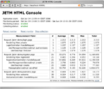
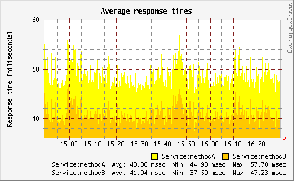

JETM performance result renderings
This page contains examples of performance statistics currently supported by JETM.
JETM HTTP Console
JETM ships with a drop-in HTTP console that provides access to aggregated performance statistics. It supports both nested and flat measurements. By default the console will represent performance data in a collapsed view and provide access to nested details per top level entry point.
Click image to the left to enlarge sample screenshot.
RRD Support
For runtime monitoring of server applications you might be interested in short term and long term statistics of your application performance. The image to the left is generated using a Java™ library that follows the concepts of RRDTool and can be created online or offline. It shows two measurement points for a timeframe of 100 minutes.
Click image to the left to enlarge sample screenshot.
Swing JTree
JETM has some preliminary GUI support for Swing applications. This feature is in development.
Screenshot TBD
Simple text output
For simple use cases it might be sufficient to visualize performance statistics using a SimpleTextRenderer. The example below shows two top level measurement points with one nested measurement point.
|--------------------------------|---|---------|-------|-------|-------| | Measurement Point | # | Average | Min | Max | Total | |--------------------------------|---|---------|-------|-------|-------| | BusinessService:someMethod | 3 | 3.332 | 2.732 | 3.376 | 9.996 | | BusinessService:nestedMethod | 3 | 2.832 | 2.050 | 3.011 | 8.495 | |--------------------------------|---|---------|-------|-------|-------| | BusinessService:nestedMethod | 1 | 2.921 | 2.921 | 2.921 | 2.921 | |--------------------------------|---|---------|-------|-------|-------|
Raw performance data logging
While being able to access aggregated performance statistics it still may be useful to have access to raw performance data for post processing. JETM provides an easy facility to render performance data using established logging frameworks (log4j, commons-logging, jdk 1.4 logging) while still being able to access aggregated data online. The following example shows raw measurements logged through Log4jAggregator:
[main] INFO etm-raw-data - measurementPoint=<Testpoint A>, parent=<>,
transactionTime=<1.850>, recordingTime=<1148251400451>
[main] INFO etm-raw-data - measurementPoint=<Testpoint B>, parent=<Testpoint A>,
transactionTime=<0.667>, recordingTime=<1148251400453>
[main] INFO etm-raw-data - measurementPoint=<Testpoint A>, parent=<>,
transactionTime=<1.730>, recordingTime=<1148251400453>
[main] INFO etm-raw-data - measurementPoint=<Testpoint A>, parent=<>,
transactionTime=<1.680>, recordingTime=<1148251400454>
[main] INFO etm-raw-data - measurementPoint=<Testpoint C>, parent=<Testpoint B>,
transactionTime=<0.230>, recordingTime=<1148251400454>
[main] INFO etm-raw-data - measurementPoint=<Testpoint A>, parent=<>,
transactionTime=<1.567>, recordingTime=<1148251400459>